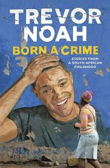

WORLDS APART
I would rename the book "Worlds apart" this is beacause the book brings out various aspects of South Africa's history, whereby any sexual relationship between the blacks and the whites was considered illegal during the apartheid era.
There were different social groups based on color and also designated areas for the whites,blacks and the colored people.The whites were prioritized and lived in nice places .
Noah became a victim of racial discrimination due to his color and most of the time could not fit in any social group.He had to learn different languages in order to fit in.
Response to the quote: "Abel wanted a traditional marriage with a traditional wife… but he never fell in love with a subservient woman… 'He only wants a woman who is free because his dream is to put her in a cage”
The traditional wife in this case refers to a woman who is raised to be always submissive to her husband.Shes taught to never speak up even when she's being abused.She believes the man has the final say,and so cant do anything without the husband's consent.
How i resonate with the quote;
Abel wanted to marry a submissive wife but he never fell in love with her because he wanted one who is independent so that he could control and tame her, to him this would be a big achievement.He believed that a woman had no say in the relationship.This is seen when he tries to prevent Patricia from going to church every Sunday and does not consider her say in the matter.He felt more masculine and in control whenever he did this.
When he lost his job,Patricia had to provide for the whole family while he kept on drinking and smoking.He even abused her and when asked he claimed that she was hard headed.
In Today's society,
Responsibilities in the relationship are shared equally and the woman openly shares her opinion on any matter without fear.One is not forced to enter into a relationship,and if your partner is abusive you have the right to walk out of that relationship and even report to the nearest authorities for further actions to be taken.
Women and men are all equal and so all of them have a right to speak up their minds and agree at the end for them to have a healthy relationship. They also share roles when it comes to house expenses and chores,as there is no specific chore that is meant for women.
Both of them can also work and contribute to manage their home expenses without anyone feeling superior or inferior to the other, due to this many relationships are able to thrive.
